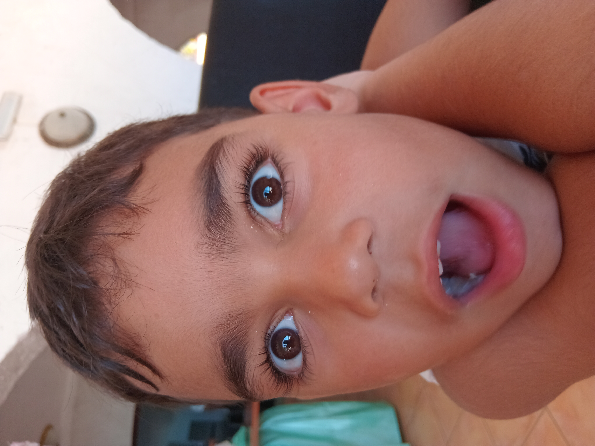

Detección de Caras con Emojis
Cara de referencia (mono)

Cuando detecte esta cara, mostrará un mono üêµ. Otras caras mostrarán conejos üê∞.
Comenzar
Detener
Cargando modelos... ⏳
Esperando para comenzar...